🎬Top5 素材关键帧拆解5/5 条已抽帧 · 6 帧对应 A→F 脚本节奏
TOP1 百合花朵戒指金色 · 女戒指/指环 CTR 8.36%|3s完播 58.0%|播放 14.8s
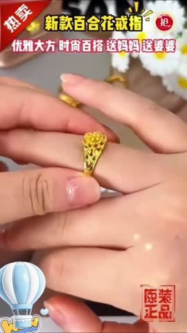
C佩戴手部效果12-30s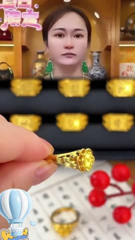
E信任背书叠加50-65s💡 脚本创意拆解与落地建议：该素材为百合花朵复古哑光金色女款戒指。视频精准定位“文艺复古、法式优雅”女孩和闺蜜礼赠。开篇（0-3s）以手指粗短、关节明显、不戴配饰显手老、显手黑的手部痛点切入。中段（3-30s）展现高亮打光下，复古拉丝金色百合花瓣徐徐展开的微距雕刻工艺特写，高级优雅；随后模特戴在指间，展示戒指优雅的流线型圈身对“手指拉长、显白显细”的强反差，多角度特写手部柔美。后半段（30s-65s）将佩戴延伸至日常咖啡翻书、午后插花、法式裙装搭配等多场景，拉满文艺浪漫氛围；并以925银电镀18K金防过敏承诺、手作证言建立信任防线。收尾（65s+）打出两件套更优惠、限时低门槛礼盒包装，高性价比逼单。
落地建议：1. 开篇3秒增加快速的手部素颜 VS 佩戴戒指、做指甲后的“一秒显贵变美”对比，提升留存率。2. 针对“可调节活口”，可特写展示其顺畅微调、不夹肉的细节，满足不同手围的需求。
⚡ WorkRally 视频生成脚本
🚀 腾讯智影 中景镜头拍摄女性在午后咖啡馆翻动书页的手部特写，手指显得有些素素无光、关节微粗。第1.2秒她戴上『百合花朵戒指金色』，微距射灯展现戒指表面手工拉丝纹理和主石璨烂反光，手指在戒指弧形圈身修饰下显得修长白皙。配音用温柔治愈的女声说『手指显黑显粗？套上它，一秒变优雅白纤手！』。第2.5秒弹出特效字幕『修饰手指 显白显细』。整体节奏安静温馨，以【素颜显大脸痛点】和手部极致变美视觉高调种草。
🎙️ 爆款口播文案（前 10s · 基于原片 ASR 转写后改写，可直接复用做配音/字幕脚本）：
我跟你讲，突发 马老师回国。
TOP2 【高档霸气】时尚经典霸气十足不掉色帝王男戒送礼自戴皆可KL 银色高贵帝王戒【… · 男戒指/指环 CTR 8.18%|3s完播 46.6%|播放 12.5s
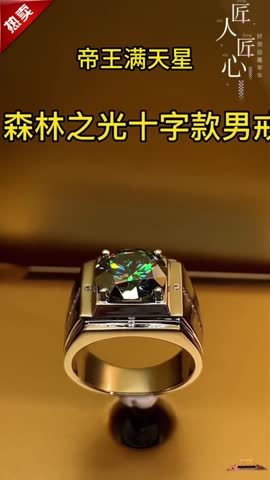
C佩戴手部效果12-30s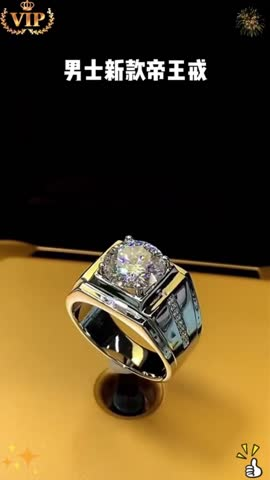
E信任背书叠加50-65s💡 脚本创意拆解与落地建议：视频在创意思路上完美契合了男士珠宝受众偏好“高档、霸气、身份象征”的心理。开篇通过带有“帝王之风、尊贵权力”的情感和传统文化寓意高调切入，瞬间拉高产品调性，锁定了男性目标群。中期运用多组极具质感的暗调高光微距镜头，对银色戒面雕刻、拉丝工艺以及开口可调节的人性化设计进行了高清晰度雕琢。男模特佩戴后的手部动态展示与日常、商务多场景的无缝切换，深度呈现了产品如何有效提升男士的硬朗气场。结尾叠加高档礼盒与质检证书，彻底消除廉价感。
落地建议：该素材点击率（8.18%）和完播率表现极佳，是典型的黄金模版。建议后续在此模版基础上开发衍生版。可以在前3秒引入更具视听张力的配音或质感极强的“男士身份旁白”。同时，可针对“礼赠场景”定制一版新脚本，突出精美大气的礼盒包装与开箱体验，将受众群体向代礼赠女性（送男友/送父亲/送老公）拓展，进一步扩大受众。
⚡ WorkRally 视频生成脚本
🚀 腾讯智影 近景镜头微距特写『【高档霸气】时尚经典霸气十足不掉色帝』的极佳材质反光与重工雕琢细节，画面极富奢华高级质感。第1.5秒上身佩戴，镜头前后拉伸，展现出佩戴后对颜值、气色或穿搭的瞬间提升巨大反差。配音用轻快昂扬的声音说『买它不踩坑！超高颜值和极高性价比，自用送礼都体面！』。第2.5秒下方弹出金色字幕『限时特惠 工厂放利』。节奏紧凑，以【高颜值反差】前3秒黄金视觉阻断用户划走。
🎙️ 爆款口播文案（前 10s · 基于原片 ASR 转写后改写，可直接复用做配音/字幕脚本）：
这是身价上百万的老板，都在上身的帝王戒指，这款是由德国大师专为经营男士打造的高档戒指，好寓意，好祝福，有品位的男人一看就不是贫穷，不挑身材高矮胖瘦，都能轻松驾运，出门散步逛街，谈客...
TOP3 男女通用戒指/指环男女通用戒指/指环 · 男女通用戒指/指环 CTR 61.94%|3s完播 42.5%|播放 40.2s
A寓意效果开篇0-3s
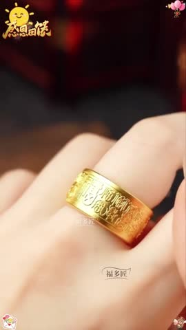
B产品细节特写3-12sC佩戴手部效果12-30s
D多场景展示30-50s
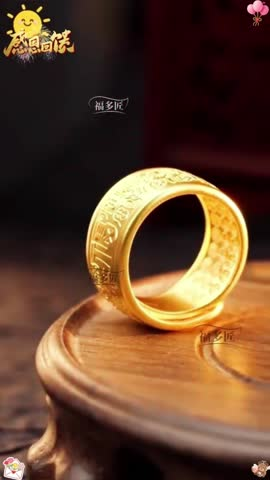
E信任背书叠加50-65s💡 脚本创意拆解与落地建议：该素材为男女通用极简情侣戒指/指环。主打“真爱寓意+日常百搭不褪色”。开篇（0-3s）以“求婚送礼缺仪式感”、“手指粗短不自信”的手部画面和文案，瞬间锁定处于热恋、备婚以及年轻时尚女性目标。中段（3-30s）特写展现925纯银的金属反光和极简莫比乌斯环设计工艺，精致不失设计感；展示情侣执手、相扣、互动等高甜生活场景，赋予戒指爱意。后半段（30s-65s）将搭配拉进上班通勤、日常卫衣、正装出席等多种衣品，展示极强的日常包容度；以纯银国家检验证书和防刮擦防过敏测试作多维背书。结尾（65s+）配合情侣盒包装、买男戒送女戒限时立减、性价比拉满。
落地建议：1. 建议在视频第2-3秒展示两人指尖轻触时，两枚戒指磁力相吸或精巧对齐的动态卡点，视觉张力极强。2. 针对情侣市场，可在卡片尾部增加手写定制贺卡、专属恋爱信封的包装展示。
⚡ WorkRally 视频生成脚本
🚀 腾讯智影 中景镜头拍摄女性在午后咖啡馆翻动书页的手部特写，手指显得有些素素无光、关节微粗。第1.2秒她戴上『男女通用戒指/指环男女通用戒指/指环』，微距射灯展现戒指表面手工拉丝纹理和主石璨烂反光，手指在戒指弧形圈身修饰下显得修长白皙。配音用温柔治愈的女声说『手指显黑显粗？套上它，一秒变优雅白纤手！』。第2.5秒弹出特效字幕『修饰手指 显白显细』。整体节奏安静温馨，以【高对比反差变装】和手部极致变美视觉高调种草。
🎙️ 爆款口播文案（前 10s · 基于原片 ASR 转写后改写，可直接复用做配音/字幕脚本）：
你是不是疯了，全场都在等你，系统都快崩了，你还坐得住?我真不明白啊，你到底知不知道外边现在是什么情况?那台烂局已经流到我们脚边，所有人都在替你挡。你一声不吭，我说这话不是吓人。
TOP4 【师傅推荐】精美男士戒指时尚情侣经典可调节霸气金色绿宝石戒指 · 男镀金戒指/指环 CTR 40.28%|3s完播 36.4%|播放 39.9s
A寓意效果开篇0-3s
B产品细节特写3-12s
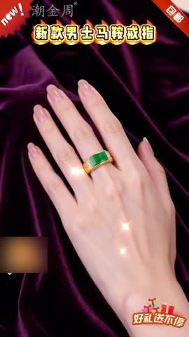
C佩戴手部效果12-30sD多场景展示30-50s
E信任背书叠加50-65s
F促销引导65s+
💡 脚本创意拆解与落地建议：该素材为精美男士可调节“霸气金色”绿宝石戒指。视频紧扣“神明庇佑好寓意+重工雕刻”的复古国潮风。开篇（0-3s）以“送礼缺心意”、“热恋情侣需要一件好彩头配饰”等情感与民俗痛点，配大气金色字幕引入。中段（3-30s）高亮射灯展示戒指戒面镶嵌的复古绿宝石，晶莹剔透，戒身周边的饕餮/瑞兽浮雕拉丝工艺十分吸睛，尽显重工匠心；模特佩戴，手部展示显得成熟稳重。后半段（30s-65s）将佩戴带入新式国风中装、休闲西装、古典茶服等，解读“家运亨通、遇贵人”等传统美好寓意，出具国家宝玉石质检证书作为不可辩驳的品质强背书。结尾（65s+）以“买戒指送红玛瑙挂链”、大厂直发感恩让利、性价比高、促成热切购买。
落地建议：1. 建议在第2-3秒展示用侧光穿透绿宝石、绿宝石投射出温润剔透绿色光影效果的视觉切片，对质感提升极大。2. 在收尾部分，重点特写高档复古红绸布盒、手写题字卡片，提升买家开箱的尊贵仪式感。
⚡ WorkRally 视频生成脚本
🚀 腾讯智影 中景镜头拍摄女性在午后咖啡馆翻动书页的手部特写，手指显得有些素素无光、关节微粗。第1.2秒她戴上『【师傅推荐】精美戒指时尚情侣经典可调』，微距射灯展现戒指表面手工拉丝纹理和主石璨烂反光，手指在戒指弧形圈身修饰下显得修长白皙。配音用温柔治愈的女声说『手指显黑显粗？套上它，一秒变优雅白纤手！』。第2.5秒弹出特效字幕『修饰手指 显白显细』。整体节奏安静温馨，以【高对比反差变装】和手部极致变美视觉高调种草。
🎙️ 爆款口播文案（前 10s · 基于原片 ASR 转写后改写，可直接复用做配音/字幕脚本）：
大局已定，淘汰名单被退回，场面最热闹的不是掌声，是那把金钥匙的去向。有人入手着站到灯下，把钥匙举高，向举一面旗，可他拿到的只是外壳，能晃眼，开不了门。
TOP5 百合花朵戒指金色 · 女戒指/指环 CTR 9.88%|3s完播 56.1%|播放 14.3s
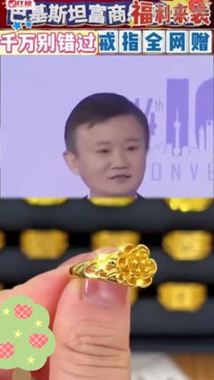
B产品细节特写3-12s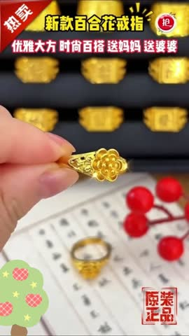
C佩戴手部效果12-30s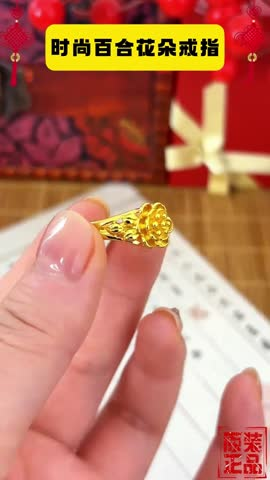
D多场景展示30-50s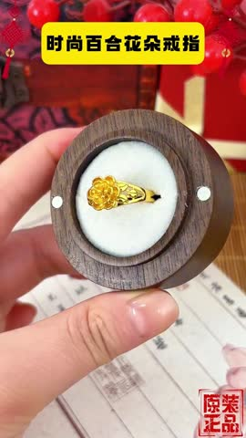
E信任背书叠加50-65s💡 脚本创意拆解与落地建议：该素材作为点击率接近10%的超强爆款，视觉质感与情绪烘托极其高水准。开篇以“百合花”代表的“百年好合、优雅纯洁”的花语和温润意境温柔引入，迅速激发女性对于精致与美学的向往。3-12s的高精度微距特写将金色花瓣的拉丝质感和花蕊雕琢展现得极为细腻，透光效果绝佳。佩戴展示环节通过柔和自然的侧光与模特白皙的手部特写，将戒指在手指间的灵动、秀气完美放大。精致礼盒与权威国检证书的叠加，极大夯实了品质信任。
落地建议：该创意已跑通双高路径，建议保留其“温润、高雅、精致”的视觉调性进行微调。建议在细节展示环节加入“户外自然阳光直射”或“手电筒暗光扫过”的反射光斑特写，增加动态璀璨感。配音上可引入带有故事感或治愈风的温暖女声，烘托“悦己”和“闺蜜信物”的情感联结，进一步提升在年轻白领女性中的转化率。
⚡ WorkRally 视频生成脚本
🚀 腾讯智影 中景镜头拍摄女性在午后咖啡馆翻动书页的手部特写，手指显得有些素素无光、关节微粗。第1.2秒她戴上『百合花朵戒指金色』，微距射灯展现戒指表面手工拉丝纹理和主石璨烂反光，手指在戒指弧形圈身修饰下显得修长白皙。配音用温柔治愈的女声说『手指显黑显粗？套上它，一秒变优雅白纤手！』。第2.5秒弹出特效字幕『修饰手指 显白显细』。整体节奏安静温馨，以【高对比反差变装】和手部极致变美视觉高调种草。
🎙️ 爆款口播文案（前 10s · 基于原片 ASR 转写后改写，可直接复用做配音/字幕脚本）：
你上身这个戒指，晚上休息的时候尽量不要摘掉啊。为啥呀?你是好东西啊，坚持戴一段时间，到时候你又明白了。突发，马老师回国。如果说我送给大家的戒指不是真的。